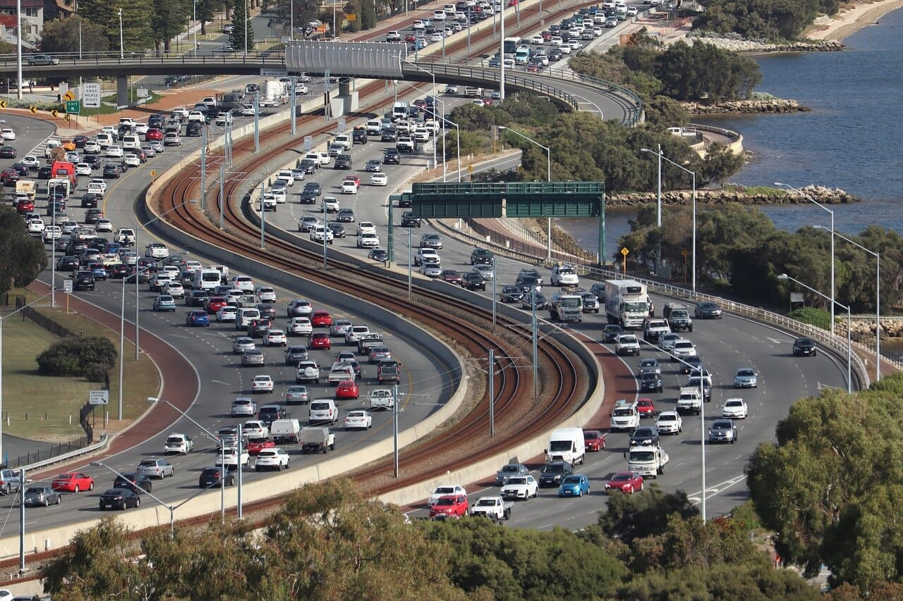

A busca por soluções que promovam a mobilidade urbana sustentável é cada vez mais urgente em um mundo onde a poluição do ar e do trânsito apresentam sérios desafios para a qualidade de vida nas cidades, neste artigo, exploraremos diversas alternativas e ações que podem ser adotadas para enfrentar esses problemas, priorizando iniciativas que transformam o mundo e contribuem para um futuro mais limpo e saudável.
Investir em transporte público eficiente e acessível é fundamental para reduzir a poluição do ar e do trânsito, a ampliação e melhoria dos sistemas de ônibus, metrô, trem e BRT (Bus Rapid Transit) podem incentivar mais pessoas a deixarem seus carros em casa, resultando em menos emissões de gases poluentes, além disso, é importante garantir tarifas justas e a integração entre diferentes modais para facilitar o deslocamento dos usuários.
Uma das alternativas mais eficazes para reduzir a poluição e melhorar a mobilidade urbana é investir em infraestrutura adequada para ciclistas, a construção de ciclovias segregadas, ciclofaixas e bicicletários incentivam o uso da bicicleta como meio de transporte. Além disso, programas de compartilhamento de bicicletas e incentivos para a compra de bicicletas elétricas são medidas que podem impulsionar a adoção desse meio de locomoção sustentável.
A transição para veículos elétricos e de baixa emissão é uma das tendências mais promissoras no campo da mobilidade urbana sustentável, os carros elétricos não emitem gases poluentes durante o uso, reduzindo significativamente a poluição do ar, para promover essa mudança, é necessário investir em infraestrutura de recarga, oferecer incentivos fiscais e estabelecer políticas que restrinjam a circulação de veículos a combustão em áreas urbanas.
O compartilhamento de veículos, seja por meio de aplicativos de carona ou de serviços de aluguel de carros compartilhados, é uma opção viável para reduzir o número de veículos nas ruas, com menos carros circulando, há uma diminuição do congestionamento e das emissões de gases poluentes, além disso, o compartilhamento de veículos incentiva a otimização dos recursos e a economia colaborativa.
O planejamento urbano desempenha um papel fundamental na promoção da mobilidade sustentável, a criação de bairros bem planejados, com infraestrutura adequada para pedestres e ciclistas, incentiva o uso de modos de transporte não motorizados, além disso, é importante promover o adensamento urbano, reduzindo a necessidade de deslocamentos de longa distância e favorecendo o uso de transporte público.
A educação e a conscientização da população são fundamentais para promover a mobilidade urbana sustentável, campanhas educativas podem destacar os benefícios de usar meios de transporte sustentáveis e alertar para os impactos negativos da poluição do ar e do trânsito, além disso, é importante incentivar a participação da sociedade nas decisões relacionadas à mobilidade, garantindo que suas necessidades e preocupações sejam ouvidas e consideradas.
A busca por soluções de mobilidade urbana sustentável é uma responsabilidade compartilhada por governos, empresas e cidadãos, através da adoção de alternativas como transporte público eficiente, infraestrutura para ciclistas, veículos elétricos, compartilhamento de veículos, planejamento urbano sustentável e educação, é possível reduzir significativamente a poluição do ar e do trânsito, transformando nossas cidades em lugares mais saudáveis, equitativos e sustentáveis.